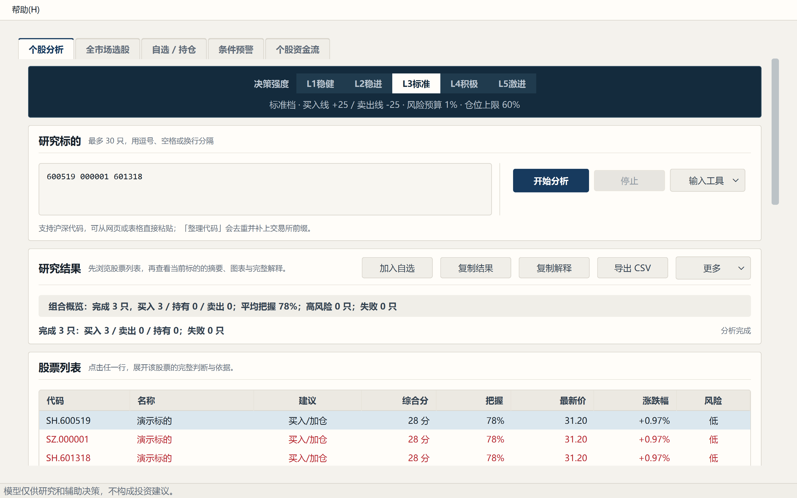
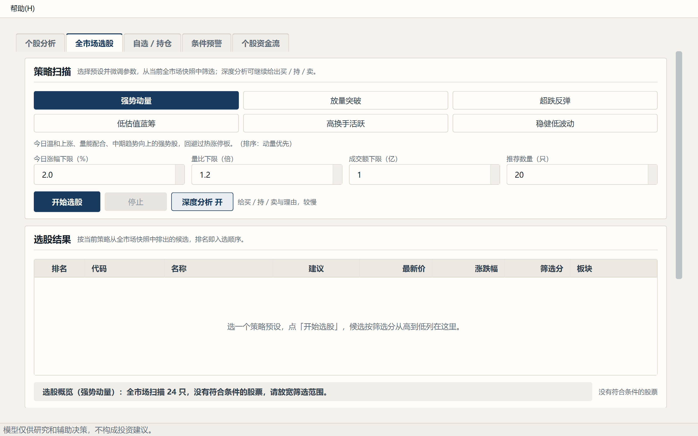
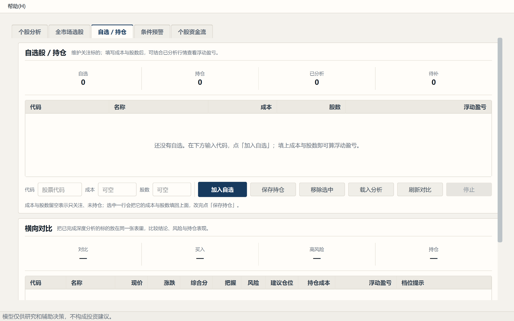
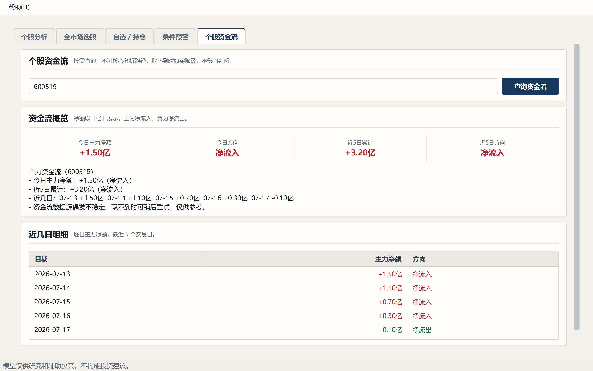
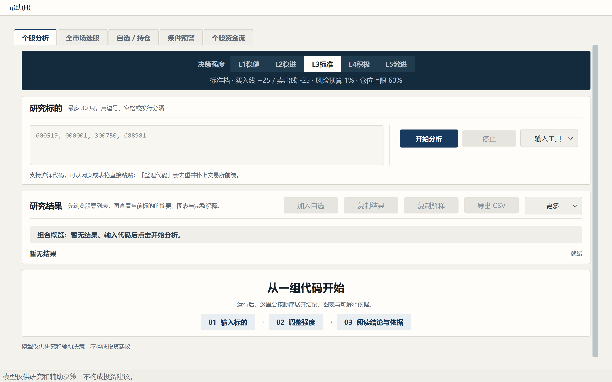
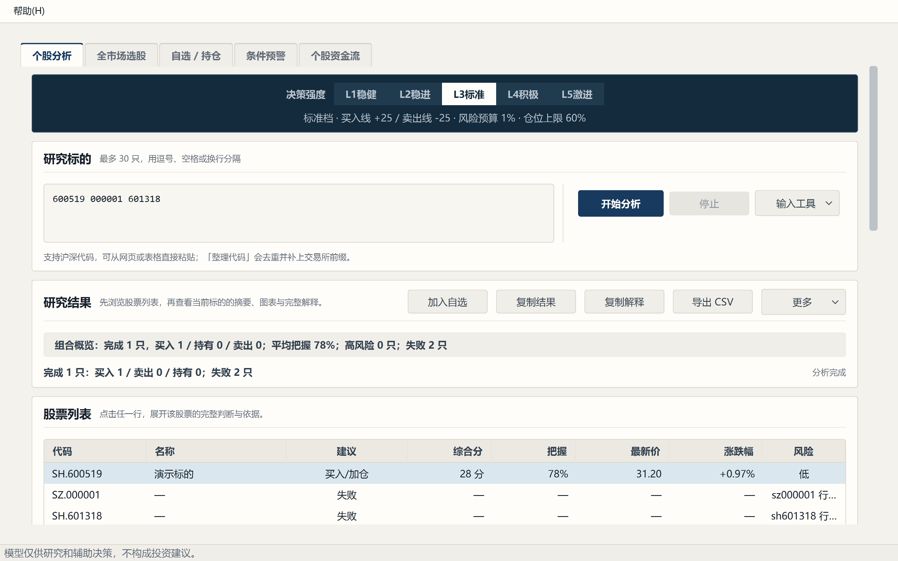

模型/视图、设计 token、K 线自绘、空态与失败态、可访问性
主窗是一个 QMainWindow，中间放一个 QTabWidget，五个功能页平铺：
个股分析 · 全市场选股 · 自选/持仓 · 条件预警 · 个股资金流。

老版 Tkinter 是「两个模式 + 四个对话框」。迁移时改成五个平铺页签，理由是：对话框里的内容 无法与主界面并置比较，而这个产品的核心动作恰恰是「对照」——对照五个档位、对照多只股票。 页签让每一块都有固定的位置，用户建立肌肉记忆后不必再找。
QAbstractTableModel + QSortFilterProxyModel」，
但实际出货的是 QStandardItemModel + 自定义表头排序。这是有意偏离，
理由写在下面——重要的是：文档后来被改成了描述真实形态，而不是让代码和文档各说各话。
代理排序会让模型真的搬行。而各个页面普遍拿 index.row() 当数据下标
（删除选中行、按行取结果都靠它）。一旦行被搬动，行号与数据就对不上了。
解决办法是把 Qt 内建排序刻意关闭，改由 _HeaderSort 只重排
垂直表头的视觉次序——模型行号原地不动，用户看到的顺序变了，代码里的 row() 依然可靠。
make_row() 建行时：item.setData(cell_sort_value(text), Qt.UserRole)
_HeaderSort 排序时：优先读 UserRole，读不到才退回解析显示文本"+9.50%" 和 "-1.20%" 会按字符串比大小，
得出「+9.50% < -1.20%」这种荒谬结果（因为字符 '+' 的码位小于 '-'）。
setText() 就地更新了显示值，
却忘了同步更新 UserRole。于是屏幕上显示的是新档位的数字，排序用的却是旧档位的键——
点列头得到与眼前数字矛盾的顺序。修复就是在就地刷新时一并 setData(..., UserRole)。
所有颜色、间距、字号、控件高度都定义在 loop/product/tokens.json，
Qt 侧由 qt_app/theme/tokens.py 读取后生成 QSS 样式表。
| token | 用途 | 值 |
|---|---|---|
ink | 墨蓝：指挥带底色、标题 | #122B3D |
up_red | 涨 / 买入 / 净流入 | #CC0000 |
down_green | 跌 / 卖出 / 净流出 | #00742A |
paper | 纸面底色 | #FBFAF7 |

QDoubleSpinBox，范围由 setRange() 钳死，
因此非法值根本输不进去，不需要再写一套输入校验。




项目没有引入 QtCharts。原因是 QtCharts 在 PySide6 的 Addons 包里， 而引入 Addons 会让打包体积从 202 MB 涨到 634 MB（多出的 432 MB 里有 195 MB 是根本用不到的 WebEngine）。 一个 K 线图不值这个代价。
domain/chart.py ← 纯几何：价格→y 坐标、索引→x 坐标、均线、量柱高度、刻度
qt_app/widgets/candlestick_chart.py ← 只负责 QPainter 落笔与鼠标交互
这样几何逻辑可以脱离 Qt 单测：给一组价格和画布尺寸，断言返回的坐标。
退化输入都有明确行为——价格区间为 0（一字板）时 price_to_y 返回中位，不做除零。
| 规则 | 为什么 |
|---|---|
每张表必须有 accessibleName | 表格控件本身无文本，读屏软件只能靠它识别；本项目让它成为必填参数，不传就抛异常 |
| 输入框/下拉必须有可访问名 | 按钮能从文本自动取名，输入框不能 |
| 五档按钮各自带名 | 读屏要能报出「第几档、叫什么」，而不是只念一个「按钮」 |
QStandardItemModel + 视觉排序，偏离最初设想是有意的，且文档已同步。